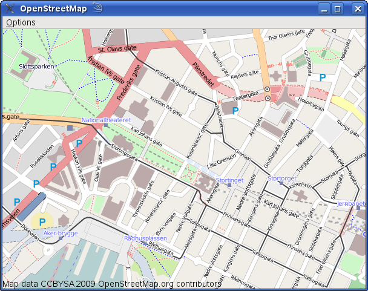

Files:
This demo shows a lookup of the local street map based on the users location as determined by GPS. If no GPS is detected a default location is selected. Also from the Options menu the user can select a sample city. There is also an option to select night view.
